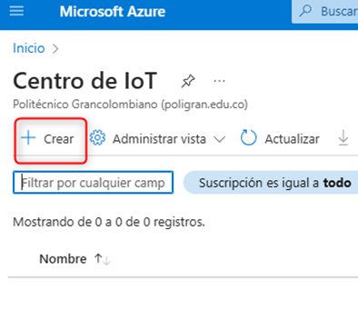
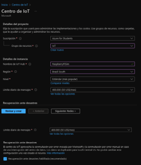
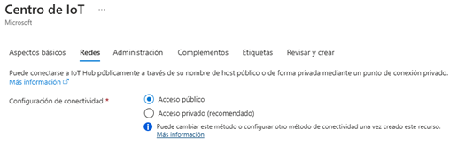
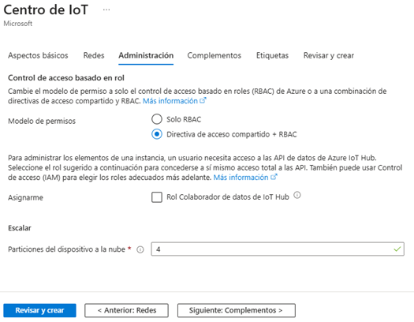
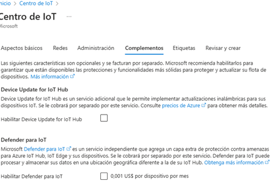
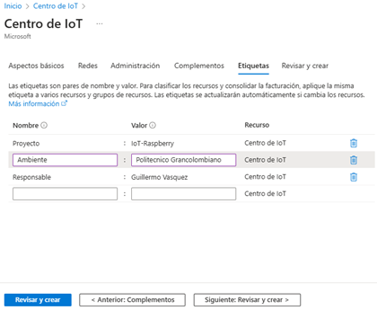
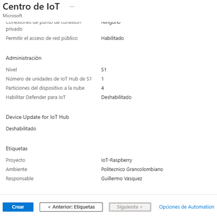
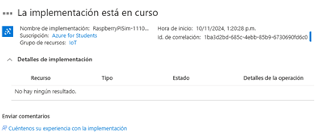
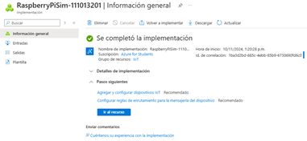

La integración de Raspberry Pi con Azure IoT abre un mundo de posibilidades para conectar dispositivos físicos a la nube y monitorear sus datos en tiempo real. Este proyecto se basa en la documentación oficial de Azure y su repositorio, y tiene como objetivo ser una guía clara y comprensible, especialmente para hispanohablantes, sobre cómo realizar la configuración inicial del hardware, la conexión al servicio de Azure IoT Hub, así como la simulación y visualización de los datos sensoriales. Esta guía está diseñada para ayudar a los desarrolladores a comprender cómo aprovechar la nube para gestionar dispositivos IoT, ofreciendo una forma sencilla y detallada de visualizar el flujo de información desde un Raspberry Pi hasta la plataforma de Azure.
La integración de Raspberry Pi con Azure IoT abre un mundo de posibilidades para conectar dispositivos físicos a la nube y monitorear sus datos en tiempo real. Este proyecto se basa en la documentación oficial de Azure y su repositorio, y tiene como objetivo ser una guía clara y comprensible, especialmente para hispanohablantes, sobre cómo realizar la configuración inicial del hardware, la conexión al servicio de Azure IoT Hub, así como la simulación y visualización de los datos sensoriales. Esta guía está diseñada para ayudar a los desarrolladores a comprender cómo aprovechar la nube para gestionar dispositivos IoT, ofreciendo una forma sencilla y detallada de visualizar el flujo de información desde un Raspberry Pi hasta la plataforma de Azure.
Para crear una cuenta Azure for Students, dirígete a la página oficial en AZURE Esta cuenta ofrece acceso gratuito a varios servicios de Azure sin necesidad de ingresar una tarjeta de crédito, aunque es limitada en cuanto al número de consultas y recursos disponibles, adecuándose a los requerimientos de los estudiantes. Es necesario contar con una cuenta de correo electrónico educativa válida (generalmente con extensión .edu u otra proporcionada por la universidad o centro educativo), que permita verificar tu estatus como estudiante. Luego, sigue las instrucciones de registro para acceder a los beneficios disponibles para estudiantes.
Luego, en la página principal de Azure, usa el buscador para encontrar el "Centro de IoT" y selecciona la opción para crear un nuevo espacio de trabajo. Una vez dentro, comienza la configuración del entorno de trabajo.

Se debe crear el nuevo espacio de trabajo:
En la configuración del espacio de trabajo, selecciona la región más cercana para reducir la latencia y minimizar errores. Activa la opción de recuperación ante desastres para garantizar la seguridad de los proyectos en caso de fallos en los servidores de Azure.
Continúa configurando las redes necesarias para el Centro de IoT, asegurándose de que toda la infraestructura esté preparada para la comunicación adecuada entre los dispositivos y servicios.
En la sección de administración de acceso, define el método de control de acceso. Puedes optar por "Solo RBAC" para dar permisos específicos a los usuarios, o por la opción de "Directiva de Acceso Compartido + RBAC", que es más flexible y permite un control más detallado. Selecciona esta última opción y marca la casilla del "Rol Colaborador de Datos de IoT Hub" para asignar automáticamente permisos de lectura y escritura. A continuación, ajusta el escalado de particiones en la nube. Para esta aplicación pequeña, cuatro particiones serán suficientes para garantizar un buen rendimiento sin excesos innecesarios.
En la pestaña siguiente se ofrecen complementos de seguridad y actualizaciones inalámbricas para los dispositivos. Dado que la aplicación es sencilla, estos complementos no se habilitarán para evitar una complejidad innecesaria.
Después, asigna etiquetas al proyecto para facilitar su búsqueda y administración. Estas etiquetas son útiles cuando hay múltiples proyectos, ya que ayudan a organizar elementos y llevar un mejor control de la facturación
Finalmente, haz clic en "Revisar y crear". Revisa la configuración proporcionada por la plataforma y, si todo está correcto, se selecciona "Crear" para iniciar la implementación del centro de IoT. La implementación comenzará y deberás esperar a que se complete para empezar a trabajar con el entorno creado.
  